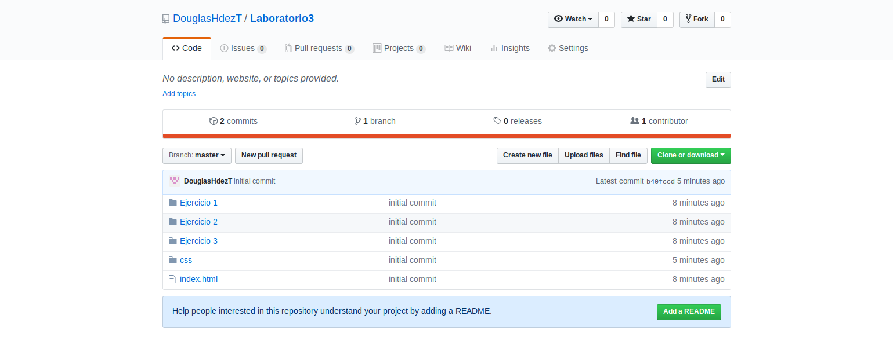

Tablas
See the Pen CSS_Example_Table by Jaime (@jdalvarenga) on CodePen.
CSS Básico | Viernes 31 de agosto de 2018
En esta práctica de laboratorio se estudiarán diversas formas de aplicar estilos a un documento de marcado (como HTML). Sin embargo la presente se centrará en el uso de las hojas de estilo css como principal administrador de dicho cometido.
Del inglés "Cascading Style Sheets" (Hojas de estilo en cascada), es el estándar utilizado para describir la aparariencia de documentos que derivan de XML, como HTML, XHTML o SVG. CSS determina la manera en como es modelada la información en pantalla. Este está compuesto por una serie de selectores y propiedades, que al juntarlos se establecen las reglas.
Una propiedad es aquella que define un aspecto especifico del estilo de un elemento este puede ser un color de fondo, una fuente especifica, un margen interior o exterior, entre otros muchos. Por ejemplo si se desea cambiar el color de texto con CSS, se debe declarar el nombre de la propiedad (color) y su valor; la siguiente delcaración de CSS cambiar el color de fuente a rojo:
color: red;
Las declaraciones se puede agrupar en reglas para poder cambiar varias propiedades a un elemento del documento HTML o XHTML. La sintaxis para agrupar declaraciones es la siguiente:
selector{
prop1: value1;
prop2: value2;
prop3: value3;
}
Existen muchas propiedades CSS, de las cuales podrá encontrar referencia en los siguientes enlaces; además encontrará explicaciones precisas de la sintaxis.
Son criterios que permiten seleccionar a que elemento o elementos del documento se aplicarán los cambios de estilo que se indiquen. Con los selectores se puede declarar que el color de la fuente de todos los parrafos del documento sea de color verde, también se puede decir que un elemento específico cambie su tamaño de fuente, entre muchas más cosas. Algunos selectores muy utilies para modificar los aspectos visuales de los elementos son:
Selector por elemento: Selecciona elementos básicos de la estructura html como body o header, es dicir etiquetas HTML. Este tipo de regla es de gran utilidad para generalizar estilos y realizar plantillas del sitio.
Por ejemplo si se quiere generalizar un margen al body de todo el sitio (como es el caso de la presente guía) la estructura de la regla haciendo uso de este selector, sería de la siguiente forma:
body{
margin-left:10%;
margin-right:10%;
}
Selector por clase: Este selecciona elementos que han sido marcado con un identificador a traves del atributo class. La sintaxis de este selector es anteceder un punto al nombre de la clase que modificará: .class{/*Definition*/}. Para ejemplificar este selector tomaremos como referencia la siguiente etiqueta:
<code class="myCode"></code>
Donde el estilo de las etiquetas <code></code> ya están definidas por la siguiente regla CSS:
code{
color: #2c3e50;
font-size:1.2em;
}
Se quiere establecer un estilo particular (texto rojo, centrado y de tamaño 2em) a la etiqueta code con la clase "myCode". La solución al problema es establecer una regla por medio de un selector de clase, de la siguiente forma:
.myCode{
display: block;
text-align: center;
color: #e74c3c;
font-size:2em;
}
Generando un resultado en el navegador como el siguiente:
Soy un código rojo
Por lo que podemos afirmar que un selector por clase en mas específico que un selector por etiqueta.
Selector por id: Estos, a diferencia de los dos selectores anteriores, delimitan sus reglas de estilos a los elementos únicos que han sido definidos con el atributo id. Su sintaxis se basa en anteponer un numeral al identificador del id seleccionado: #id{/*Definition*/}.Este criterio de selección tiene mayor prioridad ante el selector por clase y elemento es decir, es el selector más especifico.
Se basará en el ejemplo del iniciso anterior, para mostrar las características de este selector, donde la nueva etiqueta (<code class="myCode" id="CodeUnq"></code>) estará definida por ambas reglas de estilos previas, tanto de etiqueta como de clase.
En este caso se quiere conservar las definiciones delimitados por el selector de clase, pero se quiere cambiar el color a verde unicamente a esa etiqueta. La solución viene dada por una regla delimitada por un selector de id, definida de la siguiente forma:
#CodeUnq{
color: #27ae60;
}
Generando el siguiente resultado en el navegador:
Soy un codigo único
Como se hizo mención previamente, estos no son los únicos selectores que se pueden aplicar a un documento de marcado. Por lo tanto para ampliar el concimiento necesario acerca de selectores y sus combinaciones, se recomienda la lectura de los siguientes enlaces:
Utilice el siguiente recurso virtual para practicar el uso de selectores: CSS Diner
En el presente iniciso se presentan dos ejemplos de situaciones comunes al momento de diseñar un sitio web, por lo que su compresión es importante en el desarrollo del curso.
See the Pen CSS_Example_Table by Jaime (@jdalvarenga) on CodePen.
See the Pen aaNvYY by Jaime (@jdalvarenga) on CodePen.
Este ejercicio consiste en, a partir de un documento html previamente dado, completar el archivo CSS con las reglas que cumplan con los requisitos que el mismo plantea.
El documento HTML y el archivo CSS con las especificaciones de estilo se encuentran en el siguiente enlace: https://github.com/Nexxtor/programacionWeb/tree/master/laboratorios/03-css_basico/Ejercicios/Blog-CSS

En este ejercicio se prendente ejercitar el uso de tablas y selectores de estado. A continuación se detalla lo que se realizará:
Puede ver la solución al ejercicio en el enlace.
El siguiente ejercicio consiste en generar una paleta de botones, los cuales estan definidos en la imagen anexa. Se debe considerar la mayor cantidad reglas básicas en el diseño de un boton. Sugerencia: guardar este ejercicio, ya que se hará uso del mismo posteriormente en el curso con la reutilización de las clases.

Puede ver la solución al ejercicio en el enlace.
La forma de entrega será a través de un repositorio en línea (Github). Dentro de este deberán encontrarse tres carpetas con cada uno de los ejercicios; la carpeta deberá nombrarse bajo el siguiente estandar: Ejercicio_<#_ejercicio>. Además deberán de crear un index.html dentro de la raiz del repositorio, que sirva de página principal y enlace a los ejercicios (menú de contenido). Se evalurá la estructura del repositorio y que la página pricipal tenga algún estilo personalizado.
